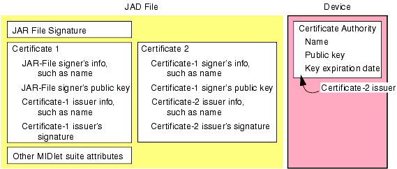

|
|
The MIDP 2.0 specification defines a security model that requires MIDlets to have permission to use security-sensitive APIs. This is different from the MIDP 1.0 security model, which had all MIDlet suites operate in a sandbox that prevented access to sensitive APIs or functions of the device.
This chapter explains the security model as the MIDP Reference Implementation implements it, and how to use it. It has the sections:
This section defines the terms used in the security model. It has the topics:
The security model defines two types of MIDlet suites:
-domain option to the midp commandAn untrusted MIDlet suite runs in a restricted environment where access to protected APIs or functionality is either not allowed or is allowed only with explicit user permission. A trusted MIDlet suite can be run in a less restricted environment.
The MIDP Reference Implementation determines whether it can trust a signed MIDlet suite by following the certificate chain of suite’s digital signature. A certificate chain is a series of certificates: the first certificate contains the public key that can be used to check the signature of the JAR file; the second certificate, if present, vouches that the first certificate valid, and the third certificate, if present, vouches that the second certificate is valid, and so on until a root certificate is reached. The root certificate does not have another entity vouching for it; it is self-signed. (It is also possible that the first certificate is self-signed. That is the simplest certificate chain.) The certificate chain, except for the root certificate, is in the MIDlet suite’s JAD file. The entity at the root of the certificate chain must have its information present on the device. The following figure shows an example certificate chain:

Root certificates are issued and signed by certificate authorities (CAs), which are well known, trusted entities. MIDlet developers might also use root certificates from network operators. For testing purposes, a developer can use a less official certificate as a root certificate, such as dummyca from the JCA keystore at midpInstallDir/bin/j2se_test_keystore.bin (the readme.txt file in that directory has the passwords) or a certificate generated using the keytool utility of the Java™ 2 Platform, Standard Edition (J2SE™). See
http://java.sun.com/j2se/1.3/docs/tooldocs/win32/keytool.html for more information.)
By being the root of a certificate chain, the entity says that it knows that the MIDlet is a legitimate application, not a malicious one. The root signer of a certificate chain must be one accepted by the device (in this case, the MIDP Reference Implementation’s device emulator) or the MIDlet suite will not be installed or run. (See Chapter 4, "Managing Public Keys of Certificate Authorities” for more information on adding a CA’s public key to the device emulator.)
A trusted MIDlet suite can be granted access to security-sensitive APIs and functionality, within the bounds of the device emulator’s security policy. A security policy associates MIDlets with protection domains. Protection domains list the security-sensitive APIs or functionalities that the device will allow the associated MIDlet suites to access, sometimes only after getting approval from the user. They are lists of permissions. (See "Protection Domains" for more information.)
Permissions identify the security-sensitive APIs or functionalities to which the device limits access. The name of a permission indicates what it is protecting. If a permission is protecting functionality provided by a package, the permission has the package name as a prefix. If a permission is protecting functionality provided by a class, its name must include both the package and class name. For example, a permission that protects the functionality provided by the PushRegistry class (the class that a MIDlet uses to have the device launch it to receive an incoming message; in other words, to use the push functionality) is called javax.microedition.io.PushRegistry.
The MIDP 2.0 specification defines the following permissions:
A protection domain defines a set of permissions that can be granted to MIDlet suites. The set does not contain every permission available, but lists only the permissions for which the protection domain can grant access. If a permission does not appear in a protection domain, then the MIDlet suites associated with the domain are denied access to that protected functionality.
To explain protection domains more fully, this section has the topics:
A protection domain defines the maximum level of access a MIDlet suite can be granted to each permission in its permission set. Each can be either an:
The name for this interaction mode is Allowed.
Blanket — Permission is granted for every invocation of the API by a MIDlet suite until it is uninstalled or the user changes the permission. Session — Permission is granted until the user exits the MIDlet suite. If the user restarts the MIDlet suite, the permission request is repeated. Oneshot — Permission is granted for only that one call. Each time the MIDlet calls the protected code, the permission request is repeated. The user permission interaction modes in the protection domain are the highest levels of access that a user may grant to a MIDlet suite. A protection domain can also associate a default interaction mode with a user permission. The default is the interaction mode that the device could suggest to a user. For example, consider a device that requests permission by presenting interaction modes in an exclusive choice list. (The interaction modes might be presented in choices like, “No, Not this time,” “Yes this time, and ask me again next time,” “Yes from now on. Don’t ask again,” and so on.) In this case, the device would use the default to determine which element of the list to preselect.
The MIDP Reference Implementation provides the following protection domains:
As the domain descriptions illustrate, the lists of permissions associated with a protection domain can be long. To make protection domains easier to manage, they can contain aliases. An alias is a name for a group of permissions. When a protection domain uses an alias for one or more of its permissions, it grants the same level of access to all the permissions in that alias.
The MIDP Reference Implementation treats signed and unsigned MIDlet suites differently when assigning protection domains. If a MIDlet suite is unsigned, you can force it into any domain when you use the command-line to install it or temporarily download and run it. (Using the command-line is described in Chapter 2, "Using the midp Executable.”) If it is not forced, the MIDP Reference Implementation assigns an unsigned MIDlet suite to the untrusted domain.
If the MIDlet suite is signed, the MIDP Reference Implementation will assign it to the domain associated with an entity that signed the suite. That is, the device emulator holds the public keys of certificate authorities. When you enter a public key into the device emulator, you associate the key with a domain. (See "Importing a Key" for more information.) When the MIDP Reference Implementation checks the MIDlet suite’s digital signature, it uses a CA’s public key. It then assigns the MIDlet suite to the protection domain associated with that public key, if it determines that it can trust the suite.
Authorization is an interaction between the needs of the MIDlet suite to use protected APIs, and the permission policies of the device. For trusted MIDlet suites there are two times that the MIDP implementation checks permissions. The first is when the user tries to put the MIDlet suite on the device; the second is when a MIDlet in the suite calls a protected API:
java.lang.SecurityException.MIDP checks the permissions of untrusted MIDlets only when they call a protected API.
The MIDP Reference Implementation defines its security policy in the file midpInstallDir\appdb\_policy.txt, where midpInstallDir is the directory that holds your MIDP installation. The policy file defines the following aliases, to make the file easier to read and maintain:
net_access – Permissions for protocols that enable the device emulator to access network resourcesapplication_auto_invocation – Permission to register with the device so that it can be started in response to an incoming messagelocal_connectivity – Permission to use the comm protocol
It also has the four domains listed previously, minimum, maximum, trusted, and untrusted. In the untrusted domain, the permissions have a user permission of blanket and a default level of session. CODE EXAMPLE 1 shows the policy file.
alias: net_access javax.microedition.io.Connector.http, javax.microedition.io.Connector.socket, javax.microedition.io.Connector.https, javax.microedition.io.Connector.ssl, javax.microedition.io.Connector.datagram, javax.microedition.io.Connector.serversocket, javax.microedition.io.Connector.datagramreceiver alias: application_auto_invocation javax.microedition.io.PushRegistry alias: local_connectivity javax.microedition.io.Connector.comm domain: minimum domain: maximum allow: net_access allow: application_auto_invocation allow: local_connectivity domain: trusted allow: net_access allow: application_auto_invocation allow: local_connectivity domain: untrusted blanket(session): net_access blanket(session): application_auto_invocation blanket(session): local_connectivity
You can change this file with any text editor.
The MIDP 2.0 Specification mandates that a MIDP 2.0 implementation be able to run MIDP 1.0 MIDlets and keep the HTTP and HTTPS functionality protected. This means that the untrusted domain must have a user level of access for the following permissions:
See TABLE 1 for the list of permissions defined by the MIDP 2.0 Specification. See the documentation that comes with your TCK for its security requirements.
|
|
Using MIDP MIDP Reference Implementation, Version 2.0 FCS |
Copyright © 2002 Sun Microsystems, Inc. All rights reserved.